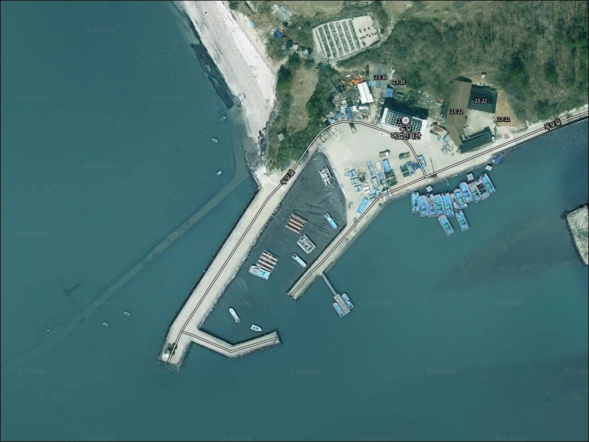
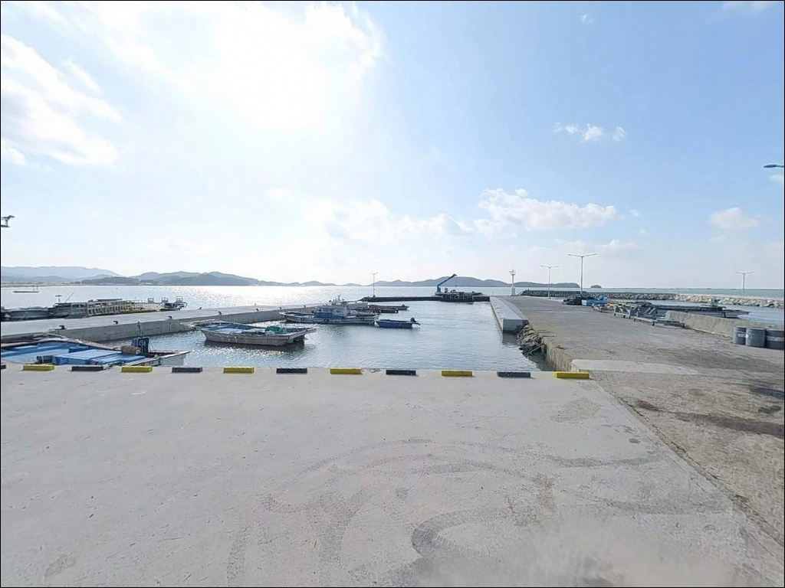
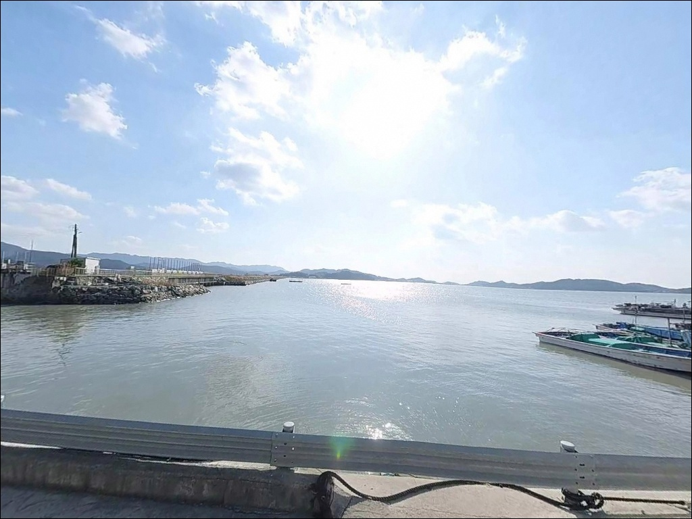
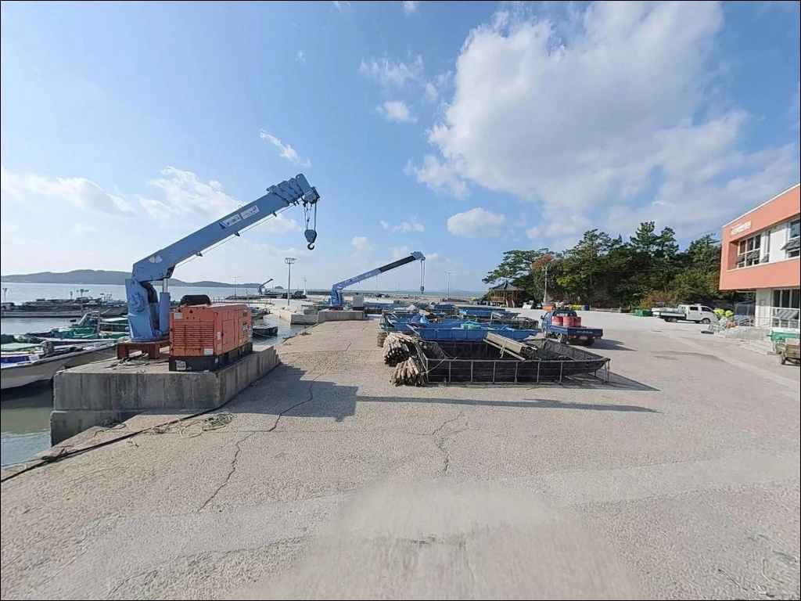
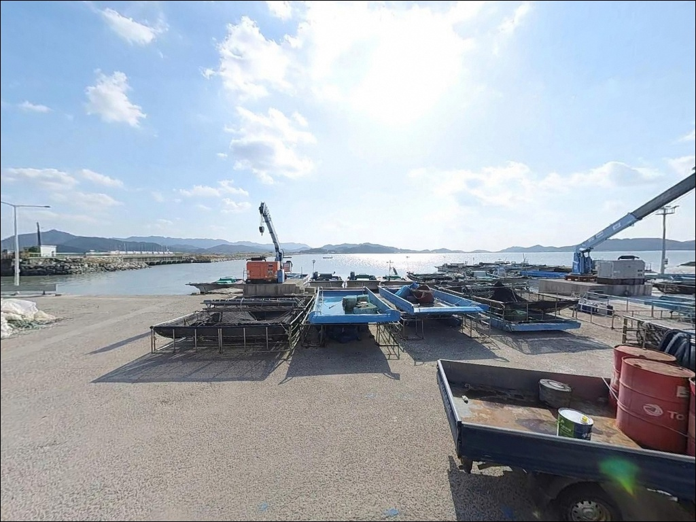
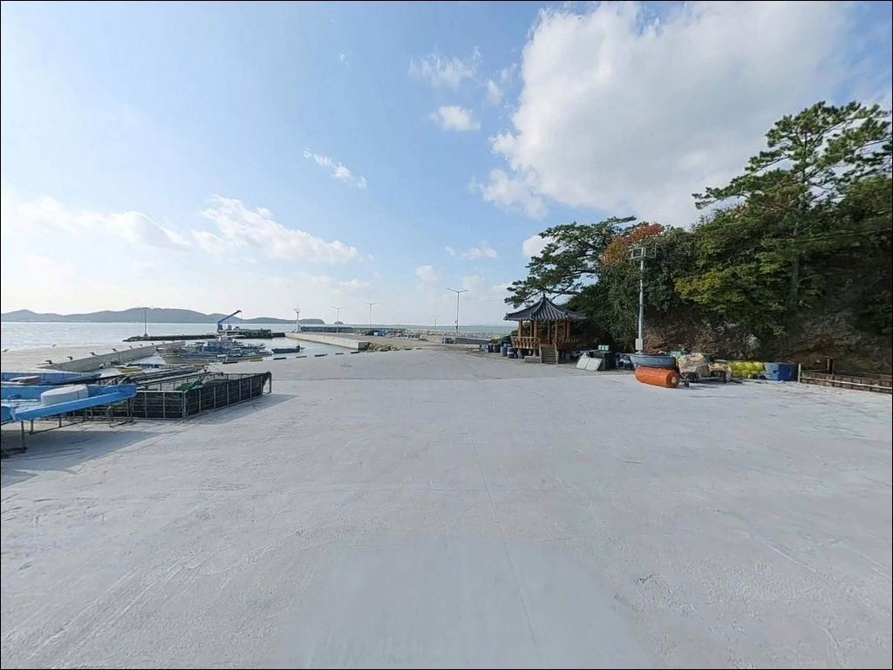
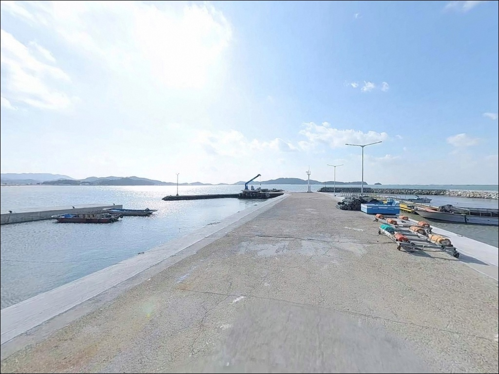
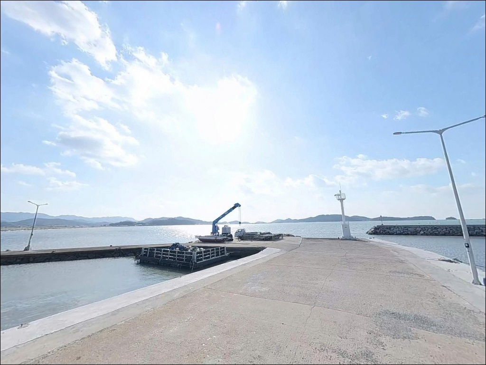
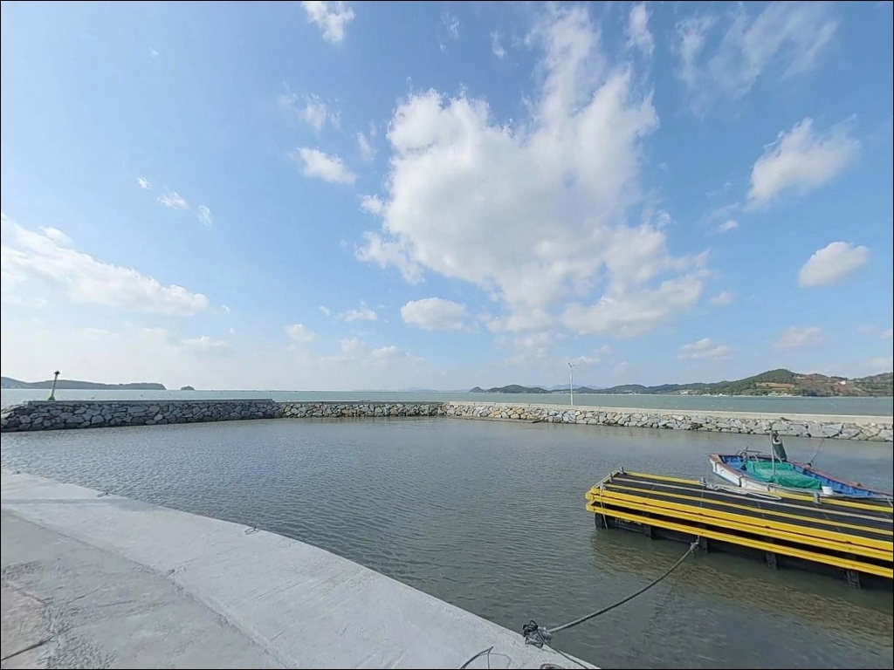

두모선착장, 전남 해남군 한적한 분위기 속 차박, 낚시를 함께 하기 좋은 곳


포인트 안내
두모선착장
전남 해남군 현산면 백포리 774-1
물때 확인 없이 두모선착장에 도착하면
간조 시 수심이 크게 낮아진 바닥이
눈 앞에 펼쳐지는 상황을 맞닥뜨릴 수 있습니다.
백포만 내만 구조는 조수 간만의 영향을 직접 받는 지형으로,
물때가 낚시 자리 확보 여부를 가르는 기준이 되는 포인트입니다.
해남 현산면 백포리 두모마을 끝자락에 위치한
두모선착장은 백포만 서쪽 연안을 따라
자리 잡은 소규모 어촌 선착장입니다.
전국적으로 알려진 포인트가 아닌 만큼
온라인 조황 자료가 거의 없는 곳이지만,
같은 백포만 해안선 패턴을 기준으로
낚시 여건을 가늠해 볼 수 있는 포인트입니다.
이 글은 두모선착장의
진입 환경, 차박 여건, 물때 판단 기준,
지형 기반 낚시 방식 적합성에 집중합니다.
조황 단정이나 특정 어종 보장은
이 글의 범위에 포함되지 않습니다.

1. 진입 동선과 포인트 접근성
두모선착장 진입은 현산면 방향에서
두모마을 안길을 따라 들어오는 경로가 기본입니다.
백포방조제를 올라 우측 방향으로 연결되는
농로와 마을길이 선착장까지 이어지는 구조로,
도로 폭이 좁고 일부 구간 비포장 가능성이 있어
초행 운전자는 진입 전 경로를 한 번 확인해 두는 편이 좋습니다.
마을 선착장 규모가 작아
회차 공간이 넉넉하지 않습니다.
소형~중형 승용차 기준으로는 회차가 가능한 수준이지만,
대형 SUV나 캠핑용 차량은
선착장 진입 전에 미리 위성지도로
회차 가능 구간을 확인해 두어야 합니다.
주차는 선착장 바로 앞 소규모 공터
또는 방조제 인접 도로변 공간을 활용하는 방식이
일반적입니다.
어선 입·출항 동선을 막지 않는 자리가 우선이며,
이른 아침 조업 시간대에는
통로 여유를 반드시 확보해야 합니다.

2. 차박 환경과 야간 체류 여건
두모마을은 민가 밀집도가 낮은 소규모 어촌으로,
야간 차량 통행이 거의 없는 편입니다.
백포만 내만 구조 덕에 외해 직접 노출이 적어
파도와 바람의 영향이 상대적으로 약한 환경이며,
프라이버시는 비교적 양호한 편입니다.
다만 가로등이 거의 없는 어촌 외곽 환경이어서
야간에는 매우 어두운 분위기입니다.
헤드랜턴과 별도 랜턴은 필수 준비물이며,
민가와 거리가 가까울 수 있어
야간 소음과 조명 방향에 주의하는 것이
기본 매너입니다.
차박을 메인으로 삼기에는 주차 공간이 협소한 편입니다.
낚시를 마치고 조용히 하룻밤 머무는 용도라면
나쁘지 않은 환경이지만,
공간 확보 여부는 현장에서 직접 확인해야 합니다.
차박이란 차량을 숙박 공간으로 활용하며
현장에서 하룻밤 머무는 여행 방식으로,
두모선착장은 완전 자급 체제가 전제 조건입니다.


3. 주변 편의시설 및 인프라 현황
두모선착장 주변 반경 3km 이내에는
편의점이나 마트를 기대하기 어렵습니다.
백포리 일대는 소규모 어촌 취락이 형성된 지역으로,
현산면 소재지(현산북평로 방면)까지
차량으로 이동해야 기본 생활 인프라에 닿을 수 있습니다.
반경 10km권에는 GS25 해남현산점이
지도상 확인되는 편의점입니다.
단, 편의점 운영 시간은 현장 또는 전화로
미리 확인하는 편이 좋습니다.
식수, 얼음, 여분 채비, 연료 모두
출발 전에 갖추고 진입하는 것이
이 포인트의 기본 준비 방식입니다.
응급 상황 발생 시 해남읍까지 거리가 상당하므로
비상약품과 수분 준비도
출발 전 점검 항목에 포함해야 합니다.

4. 방문 전 반드시 챙겨야 할 준비사항
두모선착장 방문 전 가장 먼저 확인할 것은
물때입니다.
백포만 내만 구조는 조수 간만의 영향을 직접 받아
간조 시 선착장 주변 수심이 크게 낮아지는 지형입니다.
바다타임에서 현산면 기준 물때를 확인하고,
조금 전후 또는 만조 전후 타이밍을 기준으로
출발 시각을 맞추는 것이 기본입니다.
백포만 내만 선착장은 간조 시 수심이 낮아지는 구조로,
물때 확인 없이 진입하면 낚시 자리 자체를
확보하기 어렵습니다.
특히 사리 전후에는 간조 폭이 더 커지므로
출발 전 조수 차 폭도 함께 확인해야 합니다.
마을 선착장이어서 어선 조업이 이루어지는 공간입니다.
어선 계류 로프와 어구에 낚싯줄이 닿지 않도록
자리 선정에 주의해야 하며,
야간에는 구명조끼와 헤드랜턴을
반드시 착용하고 임해야 합니다.
출조 전 기상청에서 풍속과 파고를
확인하는 것도 기본 절차입니다.

5. 지형으로 읽는 두모선착장 낚시 여건
두모선착장은 백포만 서쪽 연안에 면한
소형 방파제와 물양장 형태의 선착장입니다.
백포만은 현산면·화산면·송지면 연안으로 둘러싸인
내만 구조이며, 명량해협과 연결된 해역 특성상
조류 흐름이 완전히 잠잠하지 않은 편입니다.
선착장 내부는 잔잔하지만
조류 타이밍에 따라 흐름이 살아나는 구간이 있습니다.
수심은 2.7~3.1m 수준으로 추정되며,
저질은 펄과 조개껍질 혼합 지형입니다.
간조 시에는 수심이 더 낮아지는 구간이 있어
채비가 바닥에 닿는 상황이 생길 수 있습니다.
선착장 끝단은 상대적으로 수심이 일정하게
유지되는 구간으로, 조류 접점 자리로 활용하기에
적합한 위치입니다.
인근 백포만 해안선에서는
양식장이 형성된 구간이 있어
감성돔이 들어오는 패턴이 확인되는 해역입니다.
두모선착장도 같은 해안권에 있어
비슷한 어종 패턴을 기대해 볼 수 있는 구조입니다.
출조 전 해남 두모항 조황 검색을 먼저 해보시기 바랍니다.


6. 두모선착장에 어울리는 낚시 스타일
이 포인트에서 가장 무난하게 시도할 수 있는 방식은
원투낚시입니다.
펄과 조개껍질 혼합 저질에 수심이 얕지 않은
선착장 끝단 방향으로 채비를 던져
붕장어, 노래미, 숭어 등
바닥 어종을 기대해 볼 수 있는 지형 조건입니다.
정조 전후 타이밍에 채비를 멀리 보내
바닥을 탐색하는 방식이 이 포인트 구조에 맞습니다.
찌낚시도 이 포인트에 어울리는 방식입니다.
백포만 해안선에서 감성돔 패턴이 확인되는 권역이어서,
물때가 맞고 수심이 확보된 상황이라면
릴찌 채비로 선착장 끝단이나 측면 수로 구간을
노려볼 수 있습니다.
가을~봄 사이 수온이 낮아지는 시기에
노래미·볼락 활동이 상대적으로 활발한 편입니다.
라이트 루어도 이 규모 마을 선착장에서
부담 없이 시도할 수 있는 방식입니다.
갑오징어·주꾸미 시즌에는 소형 에기나
지그헤드 채비로 선착장 주변을 탐색하는 방식이 어울리며,
볼락을 대상으로 한 야간 라이트게임은
선착장 측면 구조물 그늘 구간을
중심으로 탐색하는 것이 효율적입니다.
두모선착장처럼 인프라가 없는 소규모 마을 선착장에서는
식수·연료·채비 모두 출발 전에 갖추는 것이
방문 성패를 가릅니다.

7. 대안 포인트와 플랜 B 동선
두모선착장이 물때나 주차 여건 면에서
여의치 않다고 판단되면
남쪽 방향 약 8km 거리의
어란진항이 첫 번째 대안입니다.
국가어항으로 등록된 곳으로
방파제 규모가 크고 진입·주차 여건이 안정적이며,
사철 다양한 어종을 노려볼 수 있는 포인트입니다.
두모선착장에서 북쪽 방향으로 4.2km 거리에는
송평해수욕장 죽도 부근 포인트가 있습니다.
해남반도에서 자주 언급되는 낚시 포인트 중 하나로,
선착장 중심의 생활낚시보다
더 다양한 지형 조건을 갖춘 곳입니다.
두모선착장을 처음 찾는 출조라면
이 두 포인트를 플랜B로 설정해 두고
현장 상황에 따라 동선을 바꾸는 방식이 효율적입니다.
화산면·송지면 일대 방파제도
같은 해안권 낚시 거점으로 활용할 수 있습니다.
감성돔·볼락 패턴이 확인되는 해역이며,
두모선착장과 동선이 겹쳐
이동 부담이 크지 않습니다.

조용한 포인트일수록
준비가 조과를 결정합니다
원투낚시나 찌낚시로 여유롭게 생활낚시를 즐기는 낚시인에게
두모선착장은 조용한 출조 선택지가 될 수 있습니다.
백포만 해안선 특유의 내만 지형과
잔잔한 선착장 환경은
북적이는 유명 포인트와 다른 분위기를 원하는
낚시인에게 맞는 곳입니다.
반면 편의시설 없이 진입하거나
물때 계산 없이 간조 시간대에 도착하면
낚시 여건 자체가 성립하지 않는 상황이
생길 수 있습니다.
물때 확인, 완전 자급 준비, 진입로 사전 점검,
이 세 가지를 갖추고 간다면
온라인 자료가 없는 만큼 오히려
조용하게 자리를 독점할 수 있는 포인트입니다.
낚시를 마치고 어둠이 내린 백포만 앞에서
조용히 하룻밤 머무는 차박 여행이라면,
조명과 식량을 완벽히 갖추고 간 사람에게만
어울리는 선착장입니다.